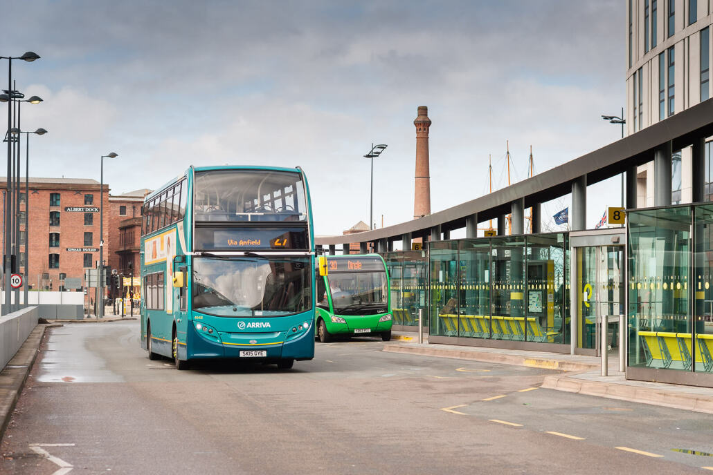
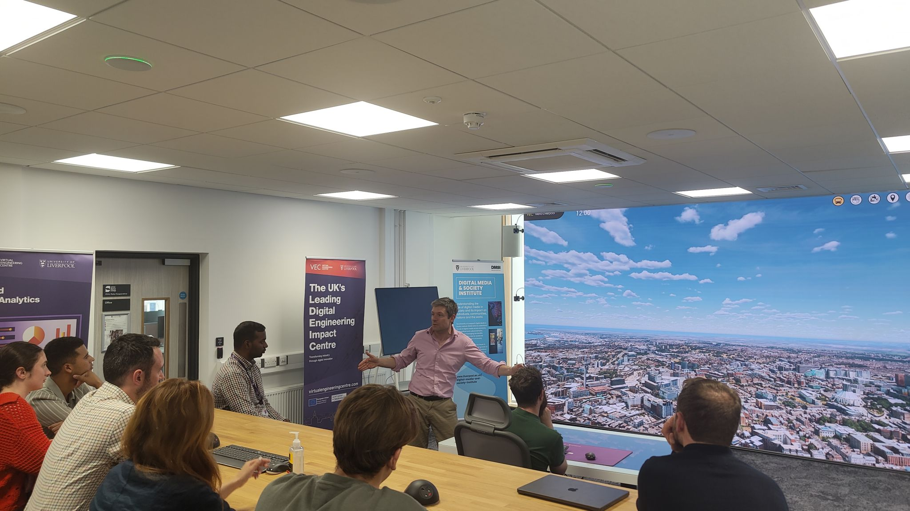
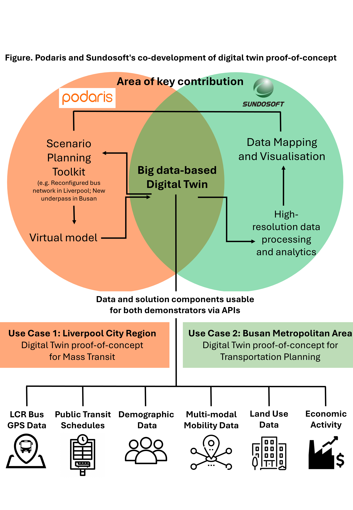

Grant Success! New Innovate UK Digital Twin Project - June 2024
Liverpool City Region, Liverpool, UK
Grant Success - UK and South Korea data-driven urban innovation Bi-Lateral
In June, I was part of a team that successfully secured £150k funding to deliver an international R&D project entitled - A Big Data Digital Twin of Mass Transit in Liverpool City Region for Smart, Equitable Mobility. The Phase I project, which is being led in partnership with Podaris, LCRCA and the University of Liverpool runs until February 2025, and builds on our existing links and connections in South Korea.
Context
This new hi-tech collaboration between UK and South Korea project partners is aimed at improving bus journey times and connectivity in the Liverpool City Region. Researchers will create a ‘digital twin’ (digital replica) of the city region’s transport system to accurately model the effects of different scenarios – such as route changes and fare reductions – to provide a better service for the local community, reduce journey times and ultimately encourage more residents to take the bus. The ‘digital twin’ will use state-of-the-art data modelling techniques and real-time vehicle location data to help transport leaders achieve greater connectivity across the region, benefitting residents and helping reduce transport inequalities. Hundreds of thousands of people use Liverpool City Region’s bus network each day, with around 82% of public transport journeys currently taken by bus. It builds on strong links with South Korea’s second city that last year saw Liverpool City Region Mayor Steve Rotheram sign a Memorandum of Understanding (MoU) with the Mayor of Busan Metropolitan City Park Heong-Joon to promote active co-operation in areas relating to digital innovation and smart cities, net zero and clean energy and health innovation.

Meet the Team
The project is being run between joint consortiums in the UK and South Korea. The UK based project partners are:
- Podaris Plc
- Liverpool City Region Combined Authority
- University of Liverpool (Dr. Heeseo Kwon, Dr. Patrick Ballantyne, Prof. Alex Singleton)
The South Korean project partners are:
- Sundosoft
- Busan Metropolitan City Government
- Busan Techno Park
- Pusan National University

The Project
The core deliverable of this project is the development of a “digital twin” of Liverpool City Region’s bus network. Using advanced data modelling techniques and real-time vehicle location data, the digital twin will simulate various transport scenarios, such as route changes and fare adjustments, helping to reduce delays, optimise journey times, and increase the attractiveness of bus travel. Such enhancements aim to boost bus patronage by up to 80%, promoting sustainability, liveability, and equity within the region. The diagram below provides a technical overview of how this is going to operate, and the nature of the collaboration between the UK and Korean industrials leads.
